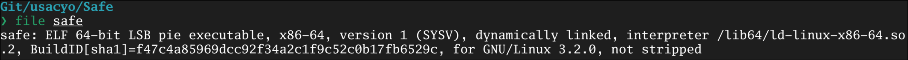
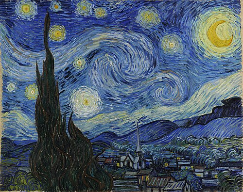

February 15, 2026
Introduction
USACyO (USA Cybersecurity Olympiad) seems to be a more structured CTF in the form of an "olympiad" for high schoolers in the US. Those that qualify after 2 rounds will represent USA in the International Cybersecurity Olympiad (ICO). More information on the ICO can be found here and here.
Since there are no rules on not releasing writeups for the sample problems (which don't count for anything), I will post my solutions.
Overall, these were really simple/trivial problems... I'd expect the actual olympiad to be much harder.
web
Rob
Problem Statement
Become one with the rob
Solution
A simple wget -r usacyo-rob.chals.io obtains a
robots.txt file:
User-agent: *
Disallow: /secret
Visiting https://usacyo-rob.chals.io/secret/ provides the key
USACYO{hmm_r0b0ts}
where is it
Problem Statement
Where is it?
Solution
Inspect-element-ing the website and searching
USACYO{ in the HTML provides us with the flag,
USACYO{itshidden} hidden with a
style="display:none".
rev
REDACTED
Problem Statement
I had a flag that was supposed to be kept secret, but somehow someone stole it and encrypted it so now I can't get it back. Please help!
flag_var = b"REDACTED"
def encrypt(data):
out = bytearray()
for i, b in enumerate(data):
out.append(((b ^ 0x5A) + i) & 0xFF)
return bytes(out[::-1])
encrypted = encrypt(flag_var)
print("Encrypted output:")
print(encrypted)
# Encrypted output: b"=8\x82@\x80\x16FE|\x12:v\x0f5q/'\x1a\x07\x1c\x1d\n\x0f"
Analysis
Looking at the provided encryption algorithm, we see the input
plaintext is a byte literal. We iterate across each byte,
XOR-ing each byte with 0x5A. Then, each byte is
modified based on its position (the + i).
This means the first byte gets +0, second byte gets +1, third byte gets +2, etc...
We finally use & 0xFF to ensure the value stays
between 0-255.
Solution
We can write a simple Python script to undo all three of these reversible operations:
encrypted = b"=8\x82@\x80\x16FE|\x12:v\x0f5q/'\x1a\x07\x1c\x1d\n\x0f"
def decrypt(data):
data = data[::-1]
out = bytearray()
for i, b in enumerate(data):
original = ((b - i) & 0xFF) ^ 0x5A
out.append(original)
return bytes(out)
decrypted = decrypt(encrypted)
print("Output:")
print(decrypted)
We get the flag b'USACYO{r3v_1t_4ll_4w4y}'
Safe
Problem Statement
I forgot the code to my safe...but maybe there's another way.
We are also given a file named "safe".
Solution
Pretty standard binary analysis here.
Everything seems normal, we can go ahead and decompile using your decompiler of choice. I am using Binary Ninja Free.
Upon a file-wide search for "USACYO{", we find our flag as
USACYO{str1ngs_1s_us3ful}
foren
Starry Night
Problem Statement
Starry Night...but something's a little off.
We are also given a .jpg file:
Solution
Of course, you should always check for steganography in image-based chall.
Running stegseek --crack starrynight.jpg gives us
flag USACYO{h1dd3n_1n_pl41n_s1ght}.
err...what?
Problem Statement
I've been trying to make it work...but this image won't open...
We are given a .png file called "falg.png"
Analysis
falg.png won't open in feh or any other image
viewer, which means it's probably corrupted. The goal of this
chall is probably to repair the corruption.
Running file on falg.png returns only:
This is abnormal as a healthy PNG should look like this:
Running pngcheck affirms our suspicions:
❯ pngcheck -v falg.png
File: falg.png (8977 bytes)
this is neither a PNG or JNG image nor a MNG stream
ERRORS DETECTED in falg.png
Solution
Dumping the first 8 bytes of the file (the signature) and comparing against the PNG specificiation, we see falg.png's signature does not match up:
❯ xxd -l8 falg.png
00000000: 4419 8d47 0d0a 1a0a D..G....
Using a hex editor of choice (or just
hexed.it), we
can edit the first three bytes of falg.png to match the correct
PNG signature. Opening the corrected PNG file gives us the flag:
USACYO{h0w_d1d_th1s_h4pp3n}